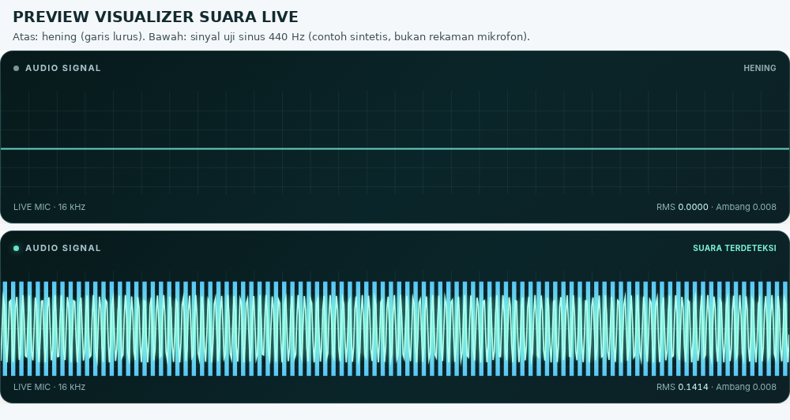

Deployment — Sistem Inferensi Aplikasi Web Streamlit#
Tahap Deployment mengintegrasikan model pembelajaran mesin yang telah dilatih ke dalam produk perangkat lunak interaktif berbasis web yang dapat digunakan langsung oleh pengguna akhir untuk mendeteksi tingkat kebisingan lingkungan melalui mikrofon.
8.1 Arsitektur Aplikasi Web Streamlit dan WebRTC#
Sistem inferensi deteksi suara sekitar diimplementasikan menggunakan kerangka kerja Streamlit dan pustaka streamlit-webrtc [Tsu21]. Arsitektur sistem beroperasi dengan alur sebagai berikut:
Penangkapan Audio Peramban (Browser Audio Capture): Pengguna membuka antarmuka web, menekan tombol START, dan memberikan izin akses mikrofon pada peramban.
Transmisi Real-Time via WebRTC: Aliran data audio ditransmisikan secara langsung (streaming) dari peramban web ke proses Python di sisi server melalui protokol WebRTC (menggunakan pustaka PyAV).
Pemuatan Model Teroptimasi: Model Random Forest dimuat dari berkas
models/random_forest.joblibmenggunakan fungsi ter-cache@st.cache_resourcedari Streamlit guna mencegah pemuatan ulang yang membebani memori pada setiap interaksi pengguna.Resampling dan Jendela Bergulir (Rolling Window): Bingkai audio (audio frames) yang diterima diakumulasikan dan di-resample menjadi saluran tunggal (mono) 16.000 Hz. Audio ditampung dalam buffer jendela bergulir dengan panjang default 10 detik.
Ekstraksi Fitur & Inferensi Berkala: Setiap interval waktu tertentu (default 2 detik), modul
src/audio_features.pymengekstrak 32 fitur akustik dari jendela audio terkini, kemudian model Random Forest menghasilkan prediksi label (berisikataunon_berisik) beserta skor probabilitas per kelas.Kebijakan Privasi Audio: Aplikasi ini tidak menyimpan rekaman audio ke dalam penyimpanan disk/file secara permanen. Data audio diproses murni di dalam memori kerja (in-memory) selama jendela aktif berlangsung.
Kutipan konfigurasi dan arsitektur pemuatan model pada app.py:
# app.py (Kutipan Inisialisasi & Pemuatan Model)
import joblib
import streamlit as st
from streamlit_webrtc import WebRtcMode, webrtc_streamer
from src.audio_features import FEATURE_NAMES, SAMPLE_RATE, extract_feature_vector
from src.wave_visualizer import render_waveform
ROOT = Path(__file__).resolve().parent
MODEL_PATH = ROOT / "models" / "random_forest.joblib"
ALERT_SOUND_PATH = ROOT / "assets" / "jangan_berisik.mp3"
@st.cache_resource
def load_model_payload():
return joblib.load(MODEL_PATH)
payload = load_model_payload()
model = payload["model"]
features_order = payload.get("feature_names", FEATURE_NAMES)
8.3 Visualizer Gelombang Suara (Live Waveform & Equalizer)#
Aplikasi dilengkapi komponen visualisasi audio langsung yang dibangun menggunakan HTML Canvas (src/wave_visualizer.py). Visualizer ini menerima sampel dari aliran mikrofon WebRTC yang sama dengan pipeline klasifikasi:
Pengurangan Beban Render (Throttling): Visualizer diperbarui setiap sekitar 0,30 detik untuk mencegah kelebihan beban komputasi antarmuka peramban.
Indikasi Keheningan: Apabila nilai RMS dari 300 milidetik audio terakhir berada di bawah ambang visualisasi, grafik dirender sebagai garis lurus datar di tengah canvas dan titik status berubah warna menjadi redup (SILENT).
Indikasi Gelombang Aktif: Ketika intensitas suara melampaui ambang batas, canvas menggambar garis gelombang (waveform) beresolusi tinggi (~0,28 detik terakhir) serta batang equalizer simetris yang mencerminkan selubung (envelope) RMS selama ~1,8 detik terakhir.
Independensi Model: Ambang visualisasi murni berfungsi sebagai gerbang tampilan antarmuka dan tidak memodifikasi masukan data maupun hasil prediksi model.


Fig. 7 Perbandingan visualizer HTML Canvas pada pengujian kondisi hening (atas) dan nada uji 440 Hz (bawah).#
8.4 Panduan Menjalankan Aplikasi di CachyOS / Linux#
Berikut panduan langkah demi langkah untuk menjalankan aplikasi Streamlit secara lokal pada sistem operasi berbasis Arch Linux / CachyOS (mendukung shell Bash, Zsh, maupun Fish):
Instalasi Paket Dependensi Sistem:
sudo pacman -S --needed ffmpeg python python-pip
Pembuatan dan Aktivasi Virtual Environment:
# Buat virtual environment lokal python -m venv .venv # Jika menggunakan shell Bash atau Zsh: source .venv/bin/activate # Jika menggunakan shell Fish: source .venv/bin/activate.fish
Instalasi Pustaka Python:
python -m pip install --upgrade pip python -m pip install -r requirements.txt
Menjalankan Server Aplikasi Streamlit:
streamlit run app.py
Buka alamat
http://localhost:8501pada peramban, klik tombol START, berikan izin mikrofon pada peramban, dan tunggu jendela 10 detik pertama terkumpul untuk melihat hasil prediksi.
8.5 Pemecahan Masalah Mikrofon & Jaringan (Troubleshooting)#
Izin Mikrofon Tidak Muncul: Pastikan peramban tidak memblokir izin mikrofon secara global. Klik ikon gembok di sebelah kiri bilah alamat peramban (URL address bar) dan pastikan izin mikrofon dalam status Allow.
Persyaratan Konteks Aman (Secure Context): Peramban modern (Chrome, Firefox, Safari) hanya mengizinkan pengaksesan mikrofon pada URL
localhostatau situs yang diamankan dengan sertifikat HTTPS. Mengakses aplikasi melalui alamat IP mentah tanpa HTTPS dari perangkat lain akan menyebabkan fitur mikrofon dinonaktifkan oleh peramban.Kendala WebRTC & Firewall: Pada jaringan kampus, kantor, atau jaringan dengan firewall simetris ketat (strict NAT), koneksi WebRTC peer-to-peer langsung dapat terhalang. Untuk implementasi hosting publik, konfigurasi server STUN/TURN (seperti Coturn atau Twilio TURN service) diperlukan di
.streamlit/config.toml.
8.6 Hasil Pengujian Sistem (Smoke Test & Automated Tests)#
Berdasarkan berkas audit sistem TEST_RESULTS.txt, seluruh pengujian teknis telah dijalankan dengan hasil:
Pengujian Pipeline & Model: 5 pengujian dasar lulus (termasuk verifikasi ketiadaan tumpang-tindih kelompok data latih-uji dan ketersediaan 32 fitur).
Pengujian Modul Visualizer: 3 pengujian lulus (sinyal hening membentuk garis datar, sinyal 440 Hz membentuk osiloskop aktif, dan sintaks JavaScript valid).
Total Pengujian: 8 dari 8 tes unit berhasil lulus (
pytest -q tests).
Important
Penting Mengenai Sifat Dokumentasi Statis:
Dokumentasi Jupyter Book ini merupakan situs web statis (HTML/CSS/JS) yang berfungsi sebagai laporan teknis komprehensif proyek. Aplikasi deteksi audio interaktif Streamlit (app.py) yang memerlukan server Python aktif dan koneksi mikrofon WebRTC tidak dapat dieksekusi secara langsung di dalam GitHub Pages. Aplikasi Streamlit harus dijalankan secara lokal di komputer pengguna (streamlit run app.py) atau di-deploy secara terpisah pada platform hosting berkemampuan Python dan HTTPS seperti Streamlit Community Cloud, Hugging Face Spaces, atau VPS pribadi.